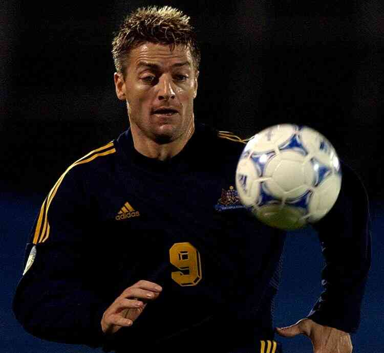
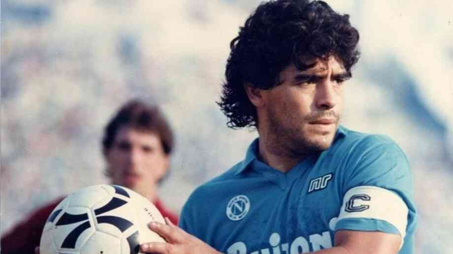
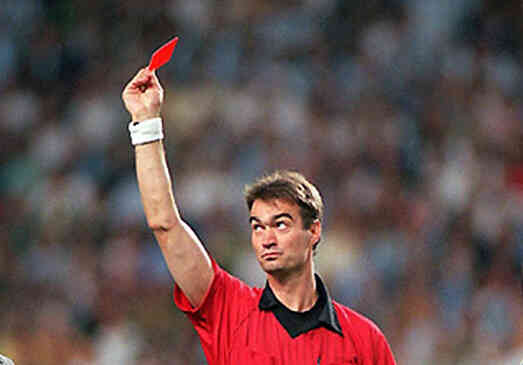
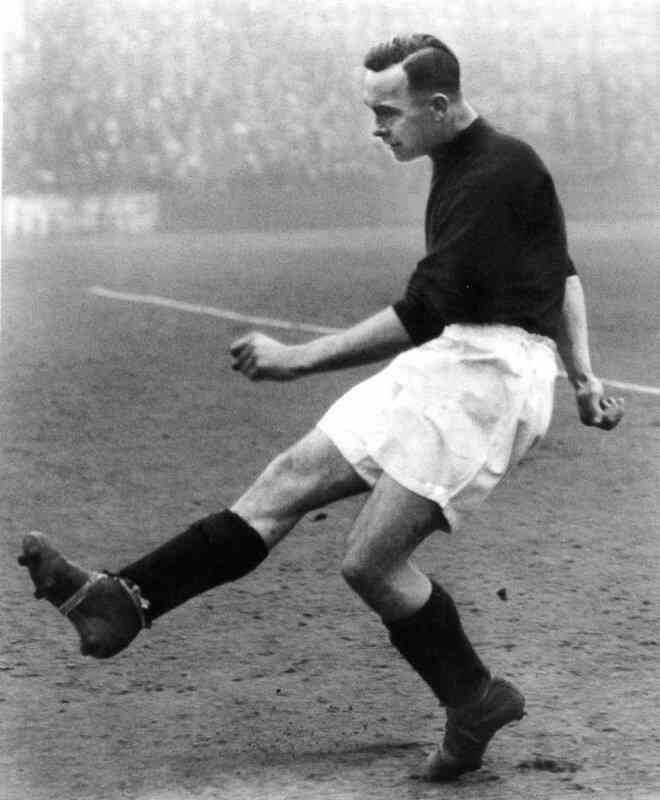
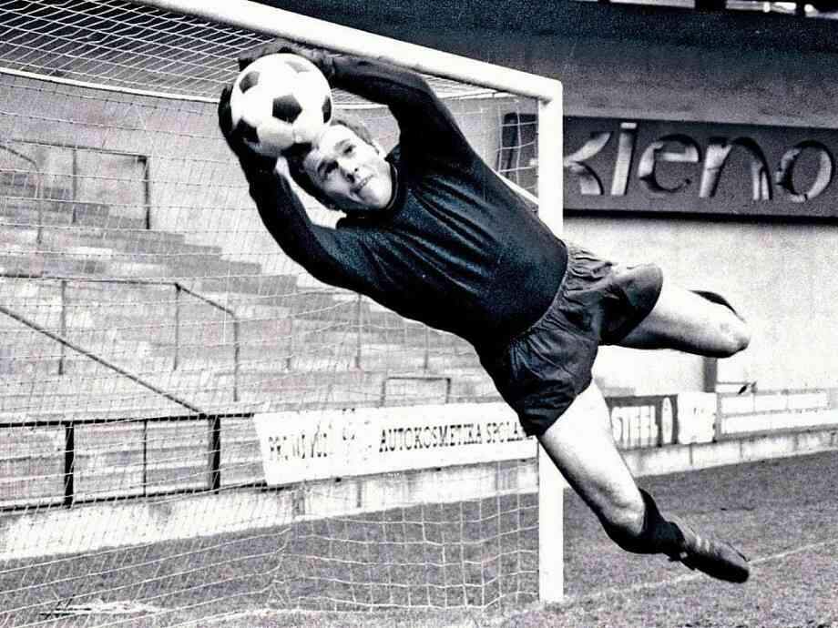
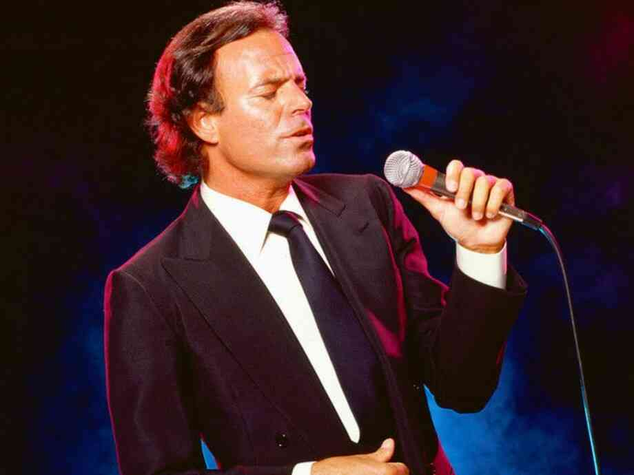
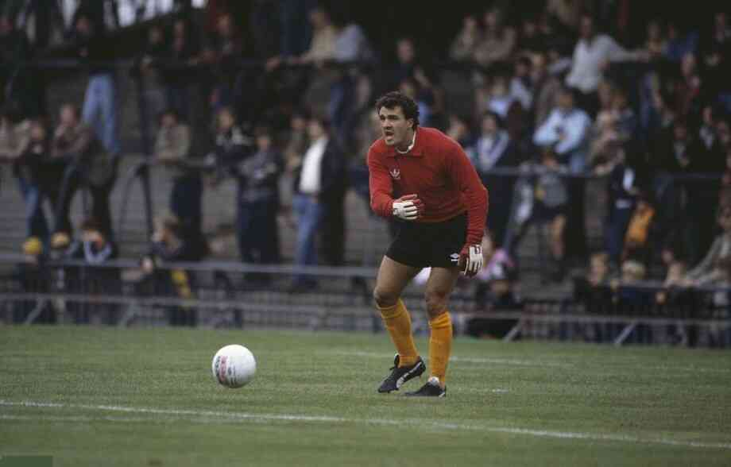
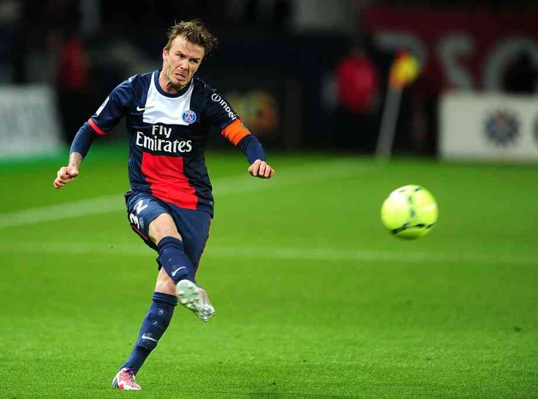

Цікаві факти


50 цікавих фактів про футбол:
- Футбол — цікава, захоплююча і улюблена мільйонами вболівальників гра.
- Футбольна, відома кожному, кричалка “Оле-Оле-Оле” родом з Іспанії. Слово “Оле” трансформувалося зі слова
“Аллах”. Це слово араби, в VIII столітті захопивші Іспанію, вимовляли при молитвах. З тих часів слово “Оле”
стало вигукуватися на кориді і під час танців фламенко.
- Футбольний стадіон Уемблі в Англії створений тільки для ігор, тренування на ньому заборонені.
- Футбол офіційно заборонений у шести країнах, включаючи Афганістан, Кампучію та Гренландію.
- Бразилія — єдина країна, яка брала участь у всіх чемпіонатах світу з футболу.
- Найшвидший гол за всю історію футболу був забитий під час матчу «Аделаїда Сіті» – «Сідней Юнайтед» в 1995
році. Через 3,67 секунди після початку гри гравець «Аделаїда Сіті» австралієць Дем’єн морі відправив м’яч у
ворота противника.
- 
Дем'єн Морі
- В Америці, в штаті Юта – європейський футбол дозволений за умови, якщо поле розташовується від церкви не
ближче ніж 1,5 милі. Однак, для американського футболу, гольфу і бейсболу — це відстань всього 0,5 милі.
- Відомо, що англійці – затяті футбольні фанати, які з трепетом ставляться до своїх футбольних клубів, і
заради яких готові на багато що. Але виявляється, що при цьому щорічний збиток приватному і державному
майну, заподіяний англійськими футбольними фанатами оцінюється в сорок мільйонів фунтів стерлінгів.
- Наприкінці 50-х років своєрідний рекорд встановив воротар юнацької команди «Юргорден» (Стокгольм) в
одному
з матчів, який його команда виграла з рахунком 18:0, він жодного разу не торкнувся м’яча. Два удари від
воріт пробив захисник, який сам бігав за м’ячем.
- До середини 1960-х років заміни у футболі були заборонені, і якщо воротаря травмували, його місце займав
польовий гравець.
- Гол століття – гол, визнаний кращим за всю історію чемпіонатів світу з футболу за підсумками опитування,
організованого на сайті FIFA під час проведення першого світового чемпіонату XXI століття.
- 
Дієго Марадона
- Він був забитий аргентинцем Дієго Марадоною на 54-й хвилині чвертьфіналу чемпіонату світу з футболу 1986
року проти Англії. Матч відбувся 22 червня 1986 року на стадіоні «Ацтека» в Мехіко. “Гол століття”
завершив
блискучий прорив Марадони в штрафну англійської команди, в ході якого він обіграв шість гравців,
включаючи і
воротаря. Всього за три хвилини до цього Марадона забив вкрай спірний гол, який отримав назву «руки
Бога».
- Дієго Марадона ще з часів виступу за “Наполі” не платив великі суми податків, зараз ця сума становить
майже
40 мільйонів доларів. Тому коли Марадона буває в Італії, він весь час ризикує позбутися якихось речей. У
2006 році італійська поліція конфіскувала у футболіста годинник Rolex, а в 2009 — сережку з вуха, яку
потім
продали на аукціоні.
- 20 березня 1976 року гравець «Астон Вілли» Кріс Ніколл в проти «Лестер Сіті» забив по два м’ячі і у
ворота
противника, і у власні ворота. Матч закінчився з рахунком 2: 2.
- Вперше пенальті був виконаний у футбольній лізі Ірландії.
- Відомі два випадки, коли арбітри показували червону картку самим собі: Енді Уейн, який судив матч
«Пітерборо Норт енд» — «Роял мейл», і Мелвін Сілвестр на матчі «Саутгемптон Армс» — «Херстборн Таррант
Брітіш Легіон». Перший видалив себе з поля під час гри, щоб уникнути конфлікту з голкіпером, а другий –
за
бійку з гравцем.
- 
АРБІТР ЕНДІ УЕЙН
- В іспанському місті Фуенте місцева команда приймала футболістів клубу “Гонша”. Минуло кілька хвилин, а
гості вели з рахунком 2: 0. І раптом на полі, немов на манежі для кориди, з’являється розлючений бик,
потім
інший, третій. Гравці і судді, які не володіли навичками матадора, кинулися врозтіч. Публіка наслідувала
їхній приклад.
- Суддя, ледь встиг сховатися в роздягальні, обережно виглянув у вікно: бики все ще носилися по полю. Гру
довелося скасувати. Незабаром з’ясувалося, що Биков, підготовлених для кориди, випустив завзятий
уболівальник місцевого клубу, щоб не допустити великого програшу своєї команди.
- У грі на першість Греції 1978 року «Етнікос» приймав «ПАОК». Відкривши рахунок, гості, підбігши до лавки
запасних, бурхливо поділяли радість з її мешканцями, не звертаючи уваги на пропозицію судді продовжити
зустріч. Недовго думаючи, футболісти “Етнікоса” за відсутності суперників почали з центру, безперешкодно
пройшли до їхніх воріт і зрівняли рахунок.
- Поразка збірної Гондурасу з футболу від збірної Сальвадору в матчах плей-офф відбіркового
етапу Чемпіонату
світу з футболу 1969 року стала безпосередньою причиною Шестиденної війни між цими країнами.
- 11-метровий удар по воротах противника названий на честь ірландського експерта з правил футболу Джона
пенальті, який в 1891 запропонував призначати такий удар за грубу гру або гру рукою команди, що
захищається
в межах її штрафного майданчика.
- ДЖОН ПЕНАЛЬТІ
- Машиніст Експресу Бухарест-Белград лише в останній момент зумів уникнути зіткнення з розпластавшимся На
рейках чоловіком. Відчайдушним сміливцем виявився любитель футболу з Югославії Раданович. Він зупинив
поїзд,
щоб не запізнитися на футбольний матч у Белграді.
- На стадіоні Буенос-Айреса якось був поставлений експеримент, мета якого полягала в тому, щоб довести
перевагу футболістів-холостяків над одруженими. Все йшло спокійно до пенальті у ворота одружених. Коли
одинадцятиметровий був реалізований, на поле вискочили … дружини. Вони побили суддю і присудили перемогу
своїм чоловікам. Щоб уникнути неприємностей холостяки не протестували. Експеримент провалився.
- Найдовший футбольний матч зіграли 1-3 серпня 1981 року дві ірландські команди футбольного клубу
«Каллінаферсі» в Керрі. Переможець виявився лише через… 65 годин 1 хвилину.
- У польському місті Бидгощ відбувся досить цікавий матч, який привернув безліч глядачів. Репортери
місцевих
газет зустрічалися з командою, повністю укомплектованою представниками однієї сім’ї-синами Каменяра
Осіньського. І хоча 11 хлопців у віці від 15 до 28 років програли, глядачі гаряче вітали «творця»
команди.
- Лев Яшин був не тільки футбольним воротарем, а й хокейним. У 1953 році він став володарем Кубка СРСР з
хокею і бронзовим призером чемпіонату СРСР. Яшина вже хотіли покликати в хокейну збірну на
Чемпіонат світу,
але він вирішив сконцентруватися на футболі.
- 
ЛЕВ ЯШИН
- У 1959 році в місті Гельзенкірхені (Німеччина), адміністрація стадіону призначила футбольний і
гандбольний
матчі помилково в один і той же час. Спортсмени ні в яку не хотіли поступатися правом проведення гри. З
цієї
причини матчі проводилися одночасно, і на полі виступали одночасно 4 команди і 2 м’ячі! Матчі успішно
були
доведені до кінця.
- Футбольний захисник з Бразилії на ім’я Пінейро – є рекордсменом по голах, забитим у власні ворота.
Тільки
за один сезон їм забито у власні ворота 10 голів.
- Після того, як його перевели в Напад, в першому ж матчі Пінейро примудрився забити гол у власні ворота.
На
25 — річний ювілей, товариші піднесли йому подарунок-компас з вигравіруваним написом: «Пам’ятай, на якому
боці противник».
- Національна команда Ботсвани не виграла жодного міжнародного матчу за двадцять вісім років
існування. У
команді змінилося більше п’ятдесяти головних тренерів, чотири з яких були колишніми радянськими
спортсменами.
- Відомий музикант Хуліо Іглесіас у своїй молодості був футбольним воротарем, і навіть виступав за Реал
Мадрид. Але його футбольна кар’єра припинилася в 20 років — він потрапив в автокатастрофу, і змушений був
майже три роки пролежати в лікарні. Хуліо Іглесіас був паралізований, у нього працювали тільки руки. У
лікарні він навчився грати на гітарі, ставши надалі відомим музикантом!
- 
ХУЛІО ІГЛЕСІАС
- 3 листопада 1969 року у Великій Британії відбувся “самий недисциплінований” в історії футболу матч.
Команди
тонгхемського молодіжного клубу (Суррей) і Хау-Лі (Хантс) настільки грубо боролися за місцевий кубок, що
арбітру довелося покарати всіх 22 гравців, включаючи одного відправленого в госпіталь, і навіть суддю на
лінії.
- Незадовго до чемпіонату світу з футболу 1966 року в Англії головний його трофей був вкрадений з
публічного
показу. До пошуків підключили поліцію і Скотланд-Ярд, але виявили кубок через сім днів в заростях
чагарнику
одного з лондонських садів завдяки собаці на прізвисько Піклз, що гуляв там з господарем. Після перемоги
на
чемпіонаті збірної Англії собака була запрошена на банкет і отримала право облизати тарілки футболістів.
- Бразильська футбольна команда “Какова”, що мала непогані результати, була несподівано розпущена наказом
міністра внутрішніх справ. Справа в тому, що команда складалася в основному з поліцейських, і під час
матчів
з її участю на стадіон прибували цілі «наряди» уболівальників в поліцейській формі. У місті починалася
вакханалія злочинності. Зате на трибунах порядок був зразковий.
- Кріс Ніколл, гравець команди “Астон Вілла”, 20 березня 1976 року, в матчі проти «Лестер Сіті», зумів
забити
по 2 м’ячі у власні ворота і ворота противника. Результат матчу-2: 2!
- Найстаршим футболістом англійської Прем’єр-ліги був Джон Баррідж. У 1955 році він грав у складі
Манчестер
Сіті в 43 роки і 5 місяців. За свою довгу кар’єру він грав у 26 різних клубах.
- 
ДЖОН БАРРІДЖ
- Наприкінці 50-х років в італійському місті Сієна футбольні судді вирішили зіграти самі. Склали дві
команди,
вийшли на поле, і матч розпочався. Все йшло нормально до тих пір, поки у ворота однієї з команд не був
забитий спірний м’яч. Ось тут-то всі 22 гравця, кожен з яких за службовим обов’язком відмінно знав і вмів
тлумачити правила, стали доводити свою правоту. Слово за слово, і справа дійшла до такої бійки, що
довелося
втрутитися поліції.
- У Бразилії, під час футбольного матчу, несподівано вітер зніс на футбольне поле кілька парашутистів.
Один
парашутист приземлився на воротаря якраз в той момент, коли голкіпер хотів оволодіти м’ячем. М’яч
опинився у
воротах, і суддя зарахував гол, незважаючи на численні протести з боку потерпілої команди, пояснивши
даний
факт, як втручання вищих сил.
- Німецький воротар Лутц Пфанненштіль єдиним у світі грав у всіх шести континентальних конфедераціях ФІФА,
а
в 2001 році сидів у Сінгапурській в’язниці за договірні матчі.
- Наприкінці 70-х років у матчі Мексиканських команд суддя Гонсалес показав 26 червоних карток. Після
видалення за грубу гру кількох гравців обидві команди кинулися з’ясовувати, хто правий. Коли дебати
перейшли
в загальну бійку, довелося видалити всіх футболістів. Тренерів, які вибігли на поле, спіткала така ж
доля,
їх випровадили з поля.
- Девід Бекхем, Англійська зірка світового футболу, в 2002 році став законодавцем моди, зробивши знамениту
стрижку — «ірокез». Ця зачіска була визнана найбільш незабутньою в спортивному світі.
- 
ДЕВІД БЕКХЕМ
- Туман-справжня напасть для англійського футболу. Буває, що все поле і трибуни оповиті непроникною
пеленою
туману. Нападник Джордж Одц після однієї з таких ігор, яка закінчилася з рахунком 3:3, сказав: «я точно
пам’ятаю, що забив п’ять м’ячів, але не знаю, в які ворота». Крім того, після закінчення гри суддя
виявив,
що за кожну команду грало по 18 осіб.
- Ліберійський футболіс Джодж Веа отримавший золотий мяч 1995 року, 2017 року став президентом
Ліберії.
- Своєрідним рекордсменом є захисник Мацціа, який грав у середині 60-х років за італійський клуб «Брешіа».
На
38-й секунді зустрічі з командою «Мантова» він забив м’яч у свої ворота, створивши найшвидший автогол.
- Італійський воротар Гроссо під час гри порадив судді носити окуляри, за що і був вилучений з поля. В
ході
розгляду цього інциденту з’ясувалося, що Гроссо є власником оптичного магазину, а у арбітра дійсно
поганий
зір. У зв’язку з цим слова воротаря, звернені до арбітра, дисциплінарна комісія розцінила не як образу, а
як
корисний і вельми раціональний рада. Скінчилося тим, що воротаря пробачили, а суддя купив в його магазині
окуляри.
- У м. Львів, збірна України, ще жодного разу не поступилася, перша гра відбулась 2001 року. Безпрограшна
серія триває уже 20 років (на момент написання статті).
- Під час товариської Футбольної зустрічі в італійському містечку Асті центрфорвард місцевої команди
Маскіо,
не потрапивши по м’ячу, колупнув землю. Та так сильно, що серйозно пошкодив собі ногу. Коли досліджували
грунт, то виявили скелет, який виявився цінною історичною знахідкою. Маскіо отримав грошову премію і
значок
“за тягу до археологічних досліджень”.
- У 1939 році Віденський клуб «Рапід» зустрічався у фінальному матчі чемпіонату об’єднаної Німеччини з
«Франкфуртом» і забив вирішальні три м’ячі в останні 15 хвилин. Відтоді на домашніх матчах “Рапіда”
утвердилася традиція — останні 15 хвилин матчу вболівальники ритмічно і безперервно аплодують.
li>
- Це сталося на початку 60-х років після футбольного матчу в Порту-Алегрі (Бразилія). Збуджені глядачі
вискочили на поле стадіону і попрямували до арбітра. Переляканий суддя щосили пустився в роздягальню. Не
зупинившись перед цією перешкодою, вболівальники зламали двері. Суддя забився в кут і в напівнепритомному
стані чекав страшної долі. Однак, як виявилося, глядачі просто хотіли … подякувати йому за відмінне
суддівство.
- У фіналі кубка англійської ліги 2005 року був зафіксований рекорд шуму на стадіоні. Після голу гравця
“Ліверпуля” Ріїсе у ворота лондонського “Челсі” мерсисайдські вболівальники справили крик потужністю
130,7
децибела. Досягнення було занесено в “Книгу Гіннесса“. Попередній рекорд становив 128,74 децибела і був
встановлений в 2000 році на матчі американського клубу «Денвер Бронкос».